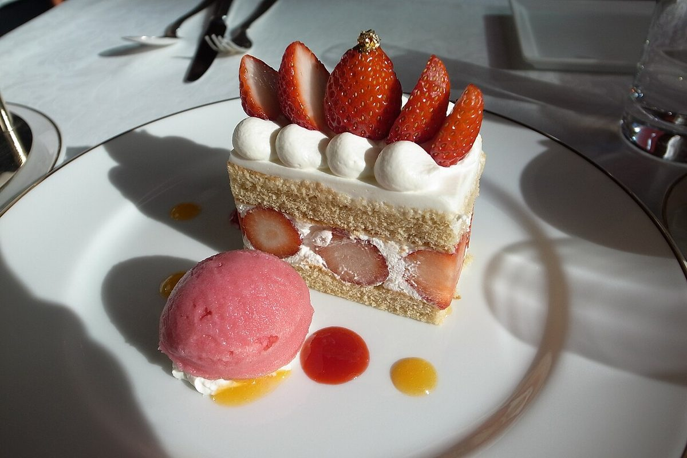
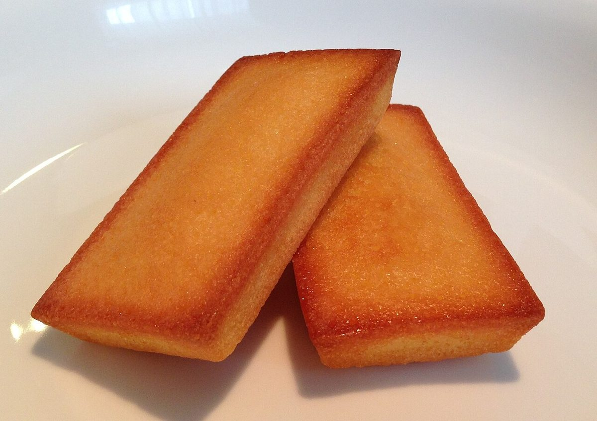

タルトと焼き菓子 / 兵庫県朝来市
sugatti bakeshop
古民家の土間に、
フランスの田舎の焼き菓子を。
旬の果実や野菜を使った、飾らない家庭的なお菓子。朝来の古民家で、ご夫婦が焼いているお店です。

お店の由来・想い
大阪のカフェから、朝来の古民家へ
菅原さんご夫婦は大阪市西区でカフェを営んだのち、2019年に朝来市へ移住。空き家バンクで出会った店舗兼住宅を改装し、焼き菓子の店を開きました。かつて土間だった場所にカウンター、居間はイートインスペースになっています。
- コンセプトは「ヨーロッパ・フランスの地方にあるベイクショップ」。飾らない素朴な雰囲気が持ち味。
- 生地の粉は北海道産、卵は野菜のエサで育った鶏の卵を使用。
- 近隣農家の旬の果実・野菜を中心に、地元産の食材をできるだけ使用。
- 野生味のある酸味を残した果実と、甘いクッキーやタルト生地のバランスを大切に。
出典: 朝来市公式サイト「あさご暮らし。」ロングインタビュー(2022年4月時点)ほか。屋号「sugatti」の意味は確認できていません。

メニュー
季節のタルトと、焼き菓子と
お菓子の種類や価格・内容は季節で変わるため、最新のご案内は準備中です。分かっている範囲の品目を、イメージ写真とともにご紹介します。

タルト
旬の果実を使った季節のタルト。
価格 準備中

キッシュ・ケーキ
野菜を使ったキッシュや、季節のケーキ。
内容・価格 準備中

焼き菓子
クッキーなど、持ち帰りしやすい焼き菓子。
内容・価格 準備中
基本はテイクアウト。購入したお菓子やコーヒーを楽しめるイートインスペースもあるとのことです。







口コミ
こんなふうに楽しんでもらえたら(イメージ例)
以下は制作側が想像して書いた文例で、実在の声ではありません。
イメージ例
旬の果物がのったタルトを、居間のようなスペースでゆっくりいただきました。素朴で落ち着く時間でした。
イメージ例
焼き菓子をお土産に。酸味と甘さのバランスがよく、家でもう一度お店の雰囲気を思い出しました。
イメージ例
古民家の玄関を入ると、やさしい香りが。季節ごとにまた来たくなるお店です。